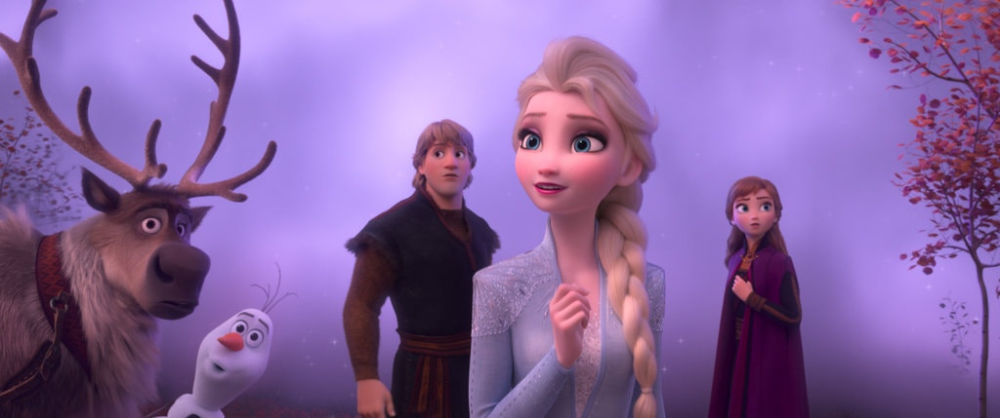

‘Frozen 2’ Review: The Cold Still Never Bothers Them
The sisters and sidekicks from “Frozen” reconvene for another adventure with storms of feeling and a new power ballad.

“Let It Go,” the warble heard around the world, wasn’t just the signature song from “Frozen.” It was an anthem (“Here I stand!”) for the mighty, mighty girl power that helped push Disney into industry dominance. The company’s supremacy is often pinned on its highest profile franchises: Lucasfilm, Marvel and Pixar, which have historically featured male-driven stories. But Disney has also heavily profited from a sparkly pink world of adventure and aspirational uplift for spirited girls and women who “dream big,” to borrow a motto from its princess franchise.
The sisters from “Frozen,” the magical Elsa (the leather-lunged Idina Menzel) and the younger, perkily ordinary Anna (Kristen Bell, a honeyed soprano) aren’t part of the official princess juggernaut. Maybe that’s because Elsa was crowned queen in the first movie, though also because the sisters are big enough to have their very own franchise, having raked in a billion plus worldwide. So, of course they are back for another round of global domination in “Frozen 2,” a diverting, prettily animated musical, again written by Jennifer Lee, who directed the movie with Chris Buck.
inspiration for this page comes from this NYT article!